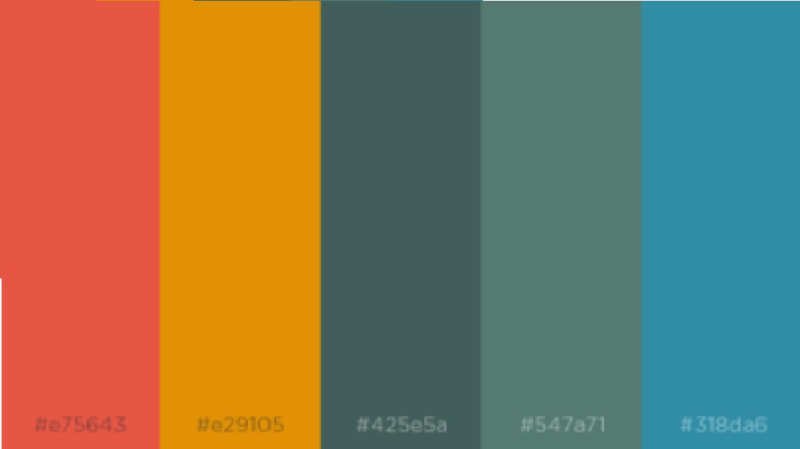
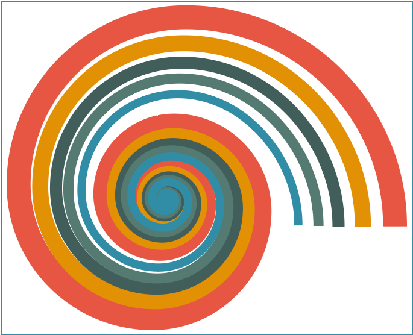
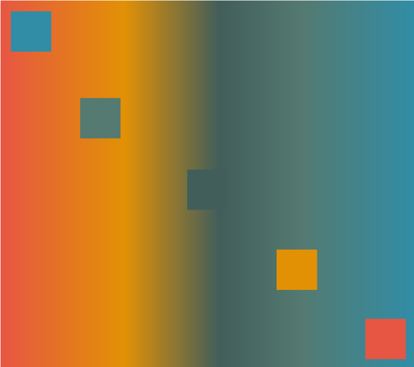
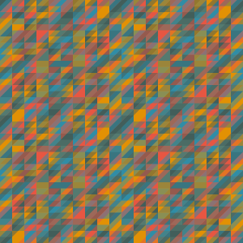
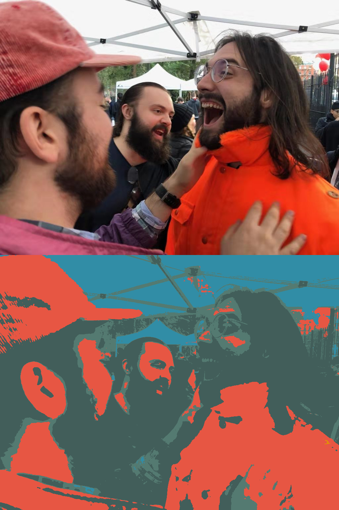
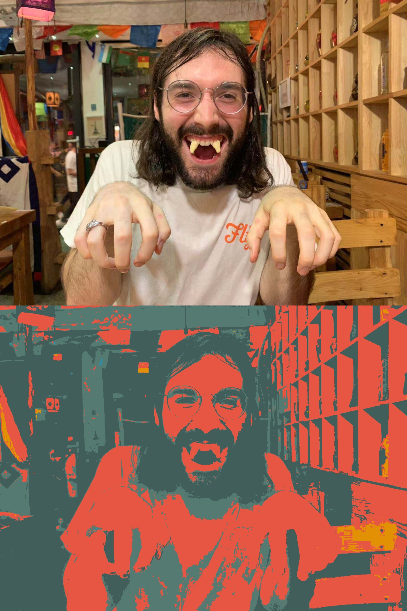
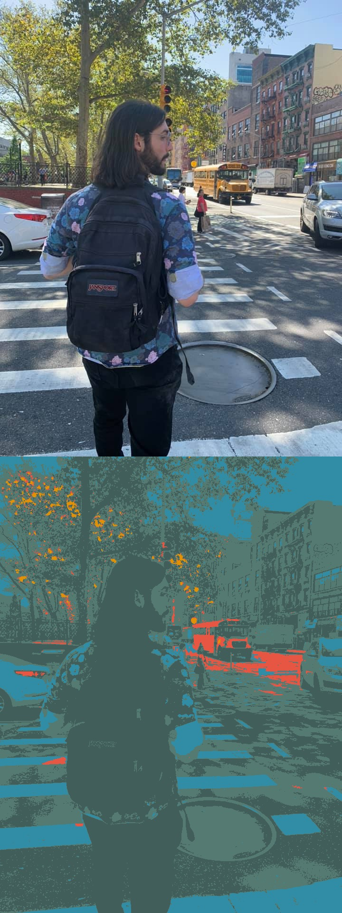

This week's assignment: pick out a color palette that represents you, and then make a few designs with it. I really like these assignments geared towards figuring out an "aesthetic of you", even if I have a lot of trouble making decisions about the actual content.
To start, I used Khroma, which is an ML algorithm that has you pick a bunch of different colors you like and which then generates colors that it thinks you would like -- pretty standard ML stuff. I knew going into the project that my favorite color was orange, so I ended up picking a lot of oranges, but strangely enough the algorithm didn't end up giving me a lot of orange. Just goes to show.
I ended up going through the almost infinite Khroma combinations and picking out a few that stood out to me. Here's the palette I ended up with.
After going to the help session with Chelsea I got the idea to use some of the shape and gradient tools in Illustrator. First up, some spirals.
I also checked out the gradients tool, and a pattern generator site patterncooler.com.
 I think that, when used in simple color application, the two green-blues tend to merge together. However, I also played around with the palette conversion tool that Amitabh made last year, and it turns out they make great backgrounds.
   Comments? Questions? Concerns? Email me here!